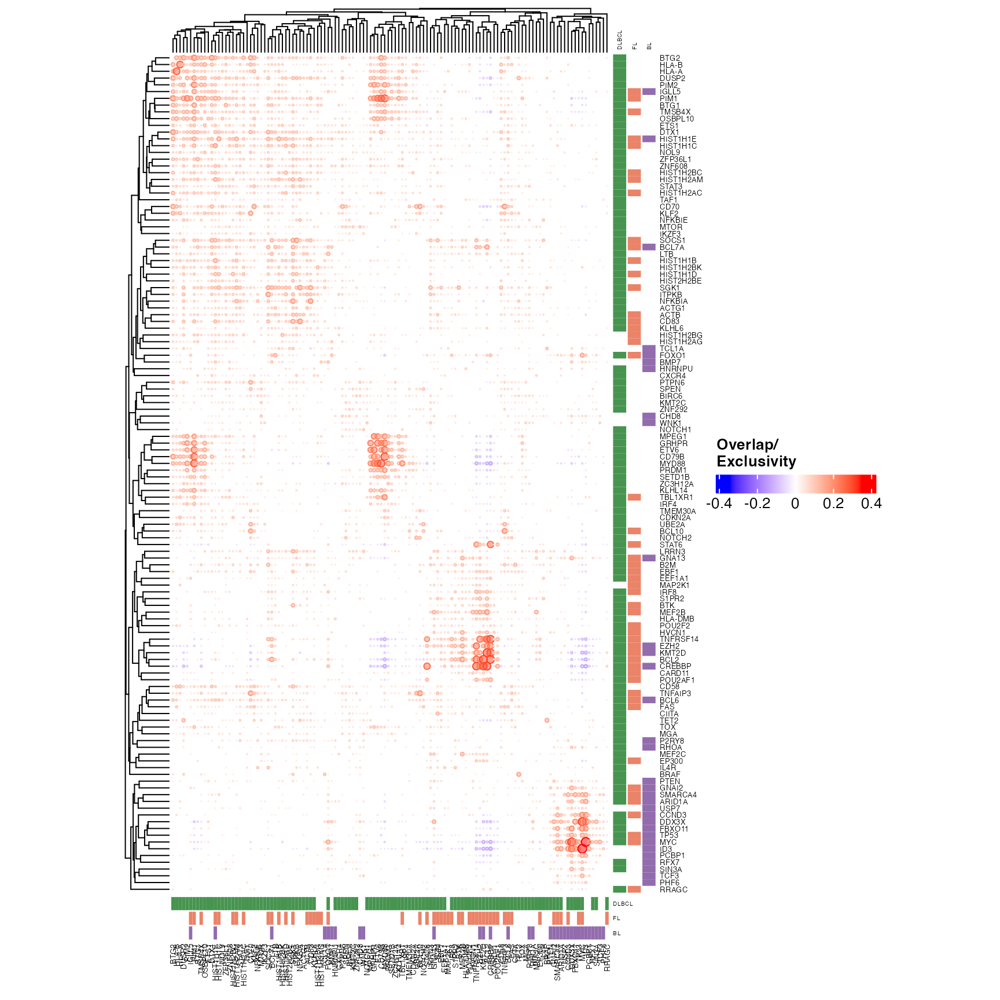
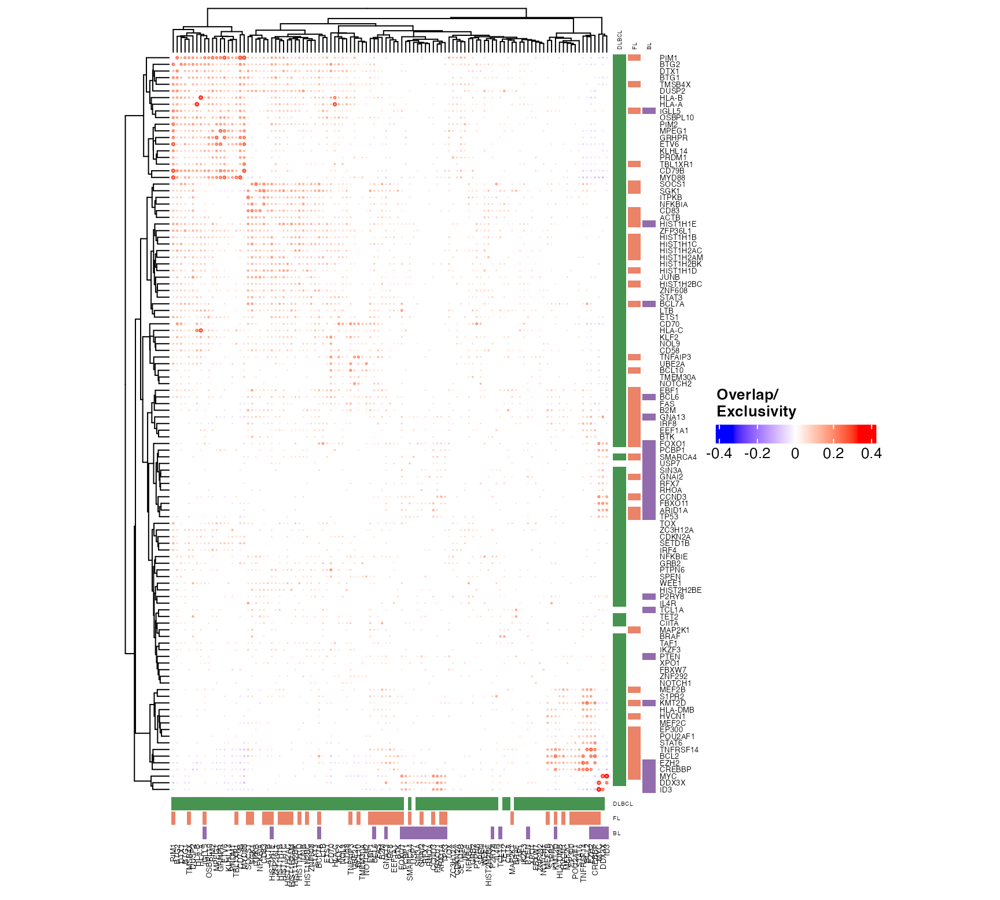
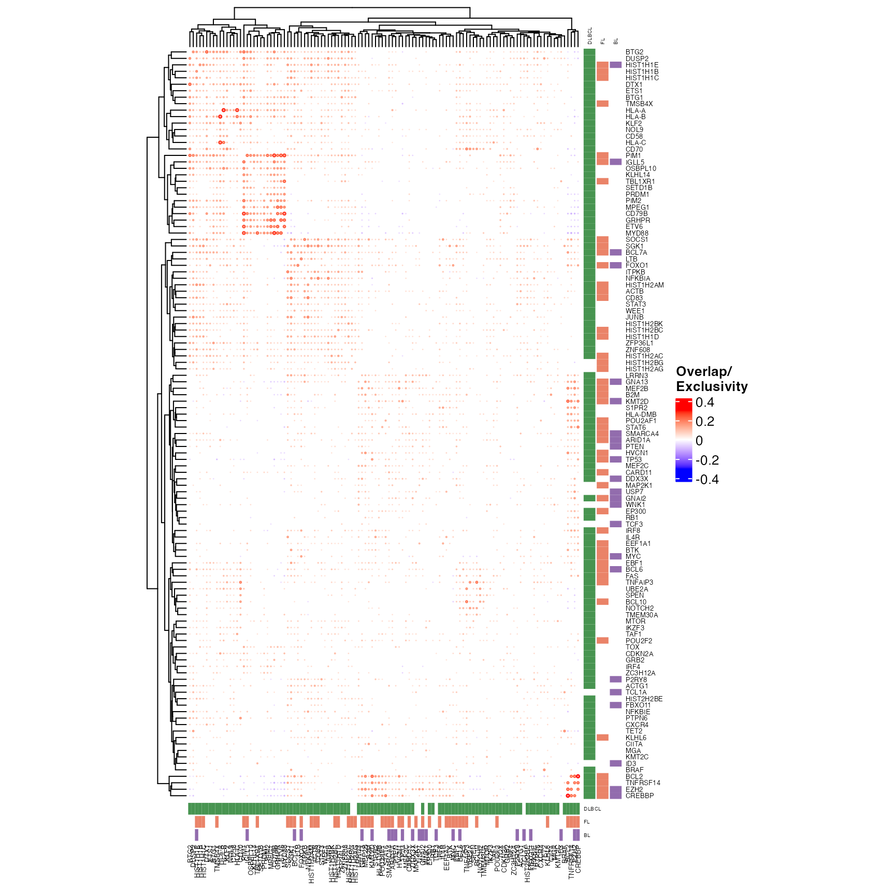

pretty_mutual_exclusivity.RdPretty mutual exclusivity plot
pretty_mutual_exclusivity(
maf_data,
mut_mat,
cn_mat,
corr_mat,
p_mat,
min_mutation_percent = 2,
genes,
these_samples_metadata,
q_threshold = 0.05,
drop_positive_correlations = FALSE,
exclude_insignificant_genes = TRUE,
engine = "ggcorrplot",
font_size = 7,
use_alpha = FALSE,
clustering_distance = "binary",
gene_anno_df,
size_factor = 0.01,
split,
return_data = FALSE,
include_silent = F,
include_hotspots = F,
review_hotspots = F,
bonferroni = FALSE,
verbose = FALSE,
metadataBarHeight = 3,
metadataBarFontsize = 4,
legend_direction = "horizontal",
annotate_by_pathology = TRUE,
show_heatmap_legend = TRUE,
cut_k,
width = 10
)library(GAMBLR)
bl_fl_dlbcl_meta = get_gambl_metadata() %>%
dplyr::filter(pathology %in% c("DLBCL","FL","BL"), seq_type != "mrna")
#> 3258 capture samples are missing a value for protocol. Assuming Exome.
#> 63 biopsies are missing from the biopsy metadata. This should be fixed!
#> affected cohorts: DLBCL_LSARP_Trios,SMZL_Strefford,cHL_Maura
#> 110 biopsies with discrepancies in the pathology field. This should be fixed!
#> 10 biopsies with discrepancies in the time_point field. This should be fixed!
dlbcl_meta = dplyr::filter(bl_fl_dlbcl_meta,pathology=="DLBCL")
all_coding <- get_all_coding_ssm(bl_fl_dlbcl_meta)
if (FALSE) { # \dontrun{
lymphgens = get_lymphgen(flavour = "no_cnvs.no_sv.with_A53")
lg_feats = lymphgens$feature_annotation
lg_genes = unique(lg_feats$Feature)
pretty_mutual_exclusivity(
maf_data = all_coding,
genes = lg_genes,
these = dlbcl_meta,
size_factor = 0.007,
engine = "ComplexHeatmap",
font_size = 6,
use_alpha = F,
clustering_distance = "binary",
include_hotspots = T)
} # }
fl_bl_dlbcl_genes = dplyr::filter(GAMBLR.data::lymphoma_genes,
FL_Tier == 1 | BL_Tier == 1 | DLBCL_Tier ==1) %>%
pull(Gene)
# because the first steps of this are slow we can
# store the output matrix as a shortcut for subsequent runs
Sys.Date()
#> [1] "2025-03-24"
suppressWarnings(
suppressMessages({
outs = pretty_mutual_exclusivity(
maf_data = all_coding,
genes = fl_bl_dlbcl_genes,
these = bl_fl_dlbcl_meta,
engine = "ComplexHeatmap",
font_size = 5,
use_alpha = T,
clustering_distance = "binary",
include_hotspots = F,
return_data = TRUE
)
Sys.Date()
}))

#> [1] "2025-03-24"
suppressWarnings(
suppressMessages({
outs = pretty_mutual_exclusivity(mut_mat=outs$mut_mat,
corr_mat = outs$corr_mat,
p_mat = outs$p_mat,
maf_data = all_coding,
genes = fl_bl_dlbcl_genes,
these = bl_fl_dlbcl_meta,
engine = "ComplexHeatmap",
font_size = 5,
use_alpha = T,
size_factor = 0.004,
clustering_distance = "euclidean",
include_hotspots = F
)
Sys.Date()
}))

#> [1] "2025-03-24"
suppressWarnings(
suppressMessages({
outs = pretty_mutual_exclusivity(
p_mat = outs$p_mat,
maf_data = all_coding,
genes = fl_bl_dlbcl_genes,
these = dlbcl_meta,
engine = "ComplexHeatmap",
font_size = 5,
use_alpha = T,
size_factor = 0.004,
clustering_distance = "euclidean",
legend_direction = "vertical",
width = 15,
include_hotspots = F)
}))
